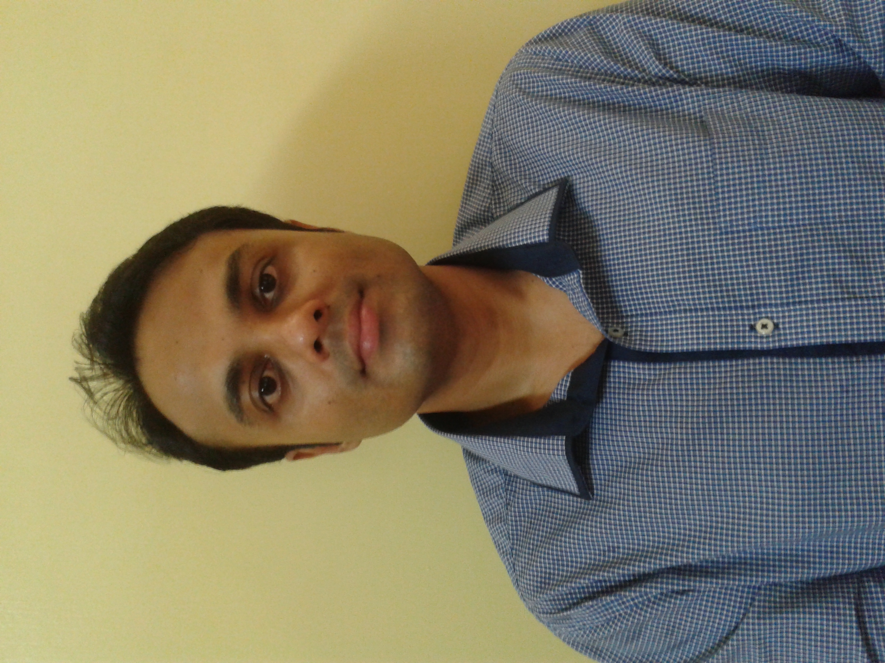

Thesis Title: “Joint Source Channel Coding Techniques”, University of Mauritius, 2010

Department of Electrical and Electronic Engineering
Faculty of Engineering
University of Mauritius
Thesis Title: “Joint Source Channel Coding Techniques”, University of Mauritius, 2010
University of Mauritius, 2004
01 Apr 2018 – to date
03 October 2014 – 02 October 2016
01 April 2013 – 31 March 2018
01 June 2009 – 31 March 2013
25 April 2022 – 24 April 2023
11 July 2023 – 10 July 2024
January 2020 – to date
January 2022 – December 2023
April 2024 – December 2025
February 2025 – to date
IEEE Mauritius Section
CTRQ 2013 International Conference, Venice, Italy.
CTRQ 2012 International Conference, Chamonix, France.
Best Final Year Project, Faculty of Engineering, University of Mauritius.